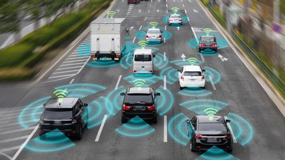

Understanding Computer Vision
Computer Vision is a prominent field of AI that grants systems the ability to comprehend and interpret visual inputs, such as digital photos and videos. By implementing sophisticated algorithms, it analyzes visual data to make automated decisions. This process effectively combines machine learning, robotics, image processing, and AI to execute tasks that traditionally required human sight.
In modern society, this technology holds significant value. Allowing machines to interpret visual landscapes is essential for making critical decisions, an area where artificial intelligence will increasingly assist moving forward.

Integration in Mechanical Engineering
Computer vision is heavily utilized within mechanical engineering because it allows physical machines to interact dynamically with the surrounding world. This integration aids engineers in improving core areas like manufacturing, robotics, maintenance, and design, paving the way for safer and more innovative technologies.
Key applications include:
- Self-Driving Vehicles: Navigating roads safely through Advanced Driver Assistance Systems (ADAS).
- Industrial Robots: Enhancing efficiency on factory assembly lines, which frees up time for other developments.
- Drones: Enabling aerial systems to process and interpret visual data in real-time.

Disadvantages & Challenges
Despite its vast benefits, there are notable drawbacks to address. System cameras can occasionally miss small, crucial details. In highly sensitive areas like the medical industry, these minor oversight mistakes can lead to severe consequences.
Additionally, early-stage development is often costly. Staff tasked with verifying the system results require specialized training due to the vast, diverse versions of the software. To maintain safety, active backup measures are required, meaning specialized professionals must regularly monitor the live data processing. Finally, privacy remains a major issue, as these systems gather sensitive user info like locations and spending habits.
Preventing Bias & The Path Forward
Mitigating algorithmic bias stands as one of the largest modern hurdles. During the training and development phases, ensuring diverse datasets is essential. For instance, vehicular systems must be thoroughly tested across different countries, lighting conditions, angles, environments, materials, and object conditions. Every minor variation must be meticulously recorded and evaluated by multiple professionals.
Ultimately, computer vision has a growing effect on day-to-day life. When deployed correctly with minimal bias, it significantly boosts efficiency and development, minimizing human effort on repetitive tasks so focus can be redirected toward new innovations.